方案 A · 🥇 整體最好玩
城市×夜生活×跨年×北泰山景×寺廟×美食——三組裡「每天玩的東西最不重複」的一組，完成度最高。
2026.12.25 → 2027.01.03 · 9 晚 10 天
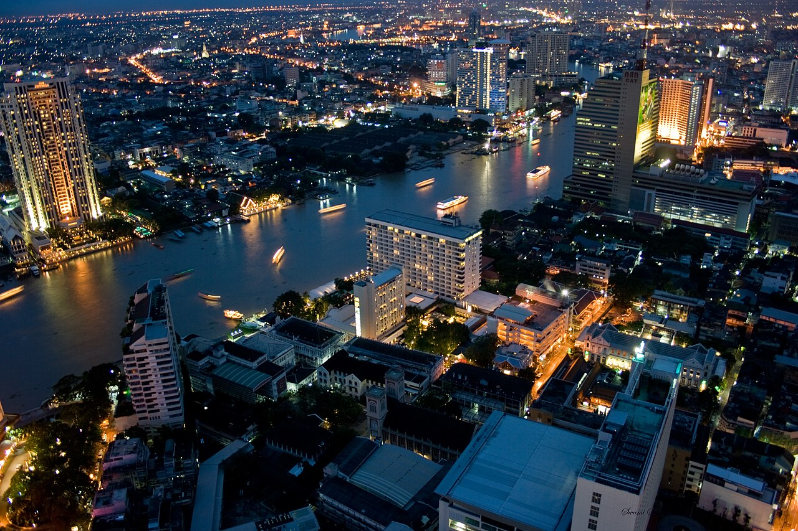
曼谷負責年底燈飾、大型商場、寺廟、河岸、夜市、按摩與跨年；清邁負責古城、蘭納文化、山景、涼爽天氣、咖啡店與慢旅行。而且 12 月底～1 月初正好是清邁一年氣候最舒服的季節之一。
動線建議：直接飛清邁進、國內段飛到曼谷、最後從曼谷出——只飛一趟國內線，不用飛去清邁又飛回曼谷再飛回去，省一趟機票也不走回頭路。
直接飛清邁，落地後不排硬行程。
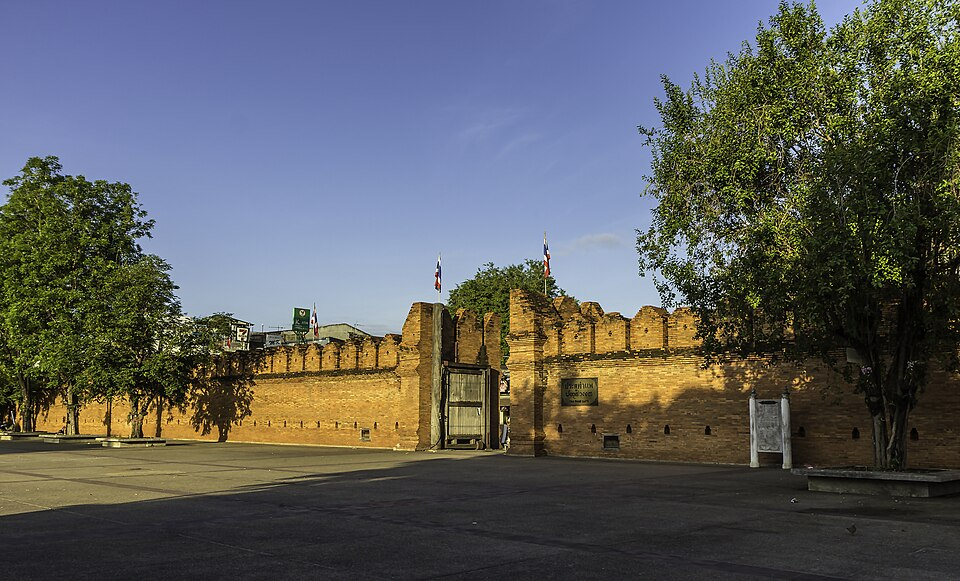
護城河圍起的正方形古城東門遺跡，是清邁最著名的地標與鴿子廣場，晚上緊鄰的夜市（Night Bazaar）攤販林立，剛落地散步剛剛好。
👀 必看：塔佩門遺跡與黃昏鴿群、夜市手工藝品攤
🍴 必吃：夜市內的烤肉串、椰奶西米露
14世紀建造的巨大佛塔，1545年地震震毀塔頂至今仍維持殘缺狀態，斑駁的紅磚結構反而成為清邁最具代表性的古蹟畫面——比修復完整的寺廟更有歷史感。
👀 必看：殘缺佛塔本體、塔基四周的大象雕塑
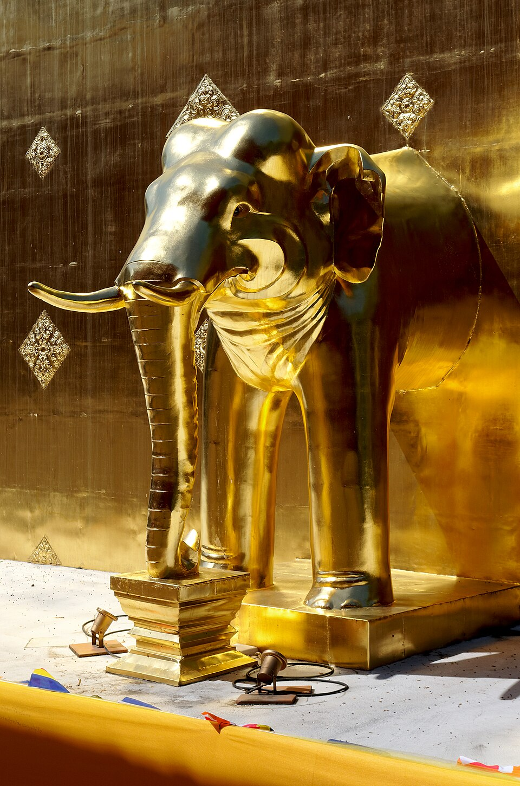
清邁地位最高的寺廟之一，供奉帕辛佛像，蘭納風格的金色屋簷與精緻木雕是典型北泰寺廟建築代表。
👀 必看：Lai Kham 禮拜堂內的壁畫、蘭納式金色屋簷
🍴 必吃：古城內傳統市場的咖哩湯麵
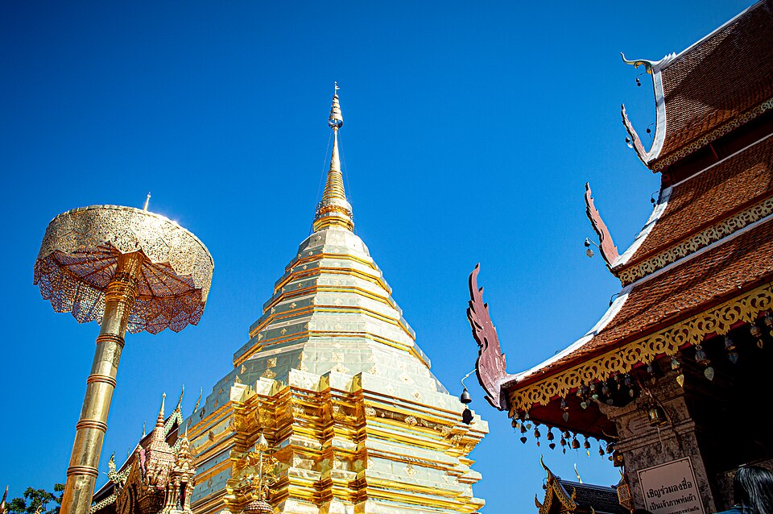
建在素貼山上的金色佛塔寺廟，是清邁精神地標，傳說由一頭大象馱著佛舍利爬上山，象停下的地方就是現在寺廟所在。309級台階兩側是兩條巨大的那伽（Naga）神龍雕塑，山頂平台可俯瞰整個清邁市區。
👀 必看：309級雙龍階梯、金色主佛塔、山頂俯瞰清邁市景；順遊 Doi Pui 苗族村落
清邁最時髦的一區，窄巷裡藏滿設計感咖啡店、選物店與畫廊，One Nimman 廣場則是社群媒體上超高人氣的網美建築群，晚上有露天市集。
👀 必看：One Nimman 紅磚圓弧建築、巷弄咖啡店巡禮
🍴 必吃：北泰料理晚餐（Khan Toke 傳統套餐）、飯後按摩
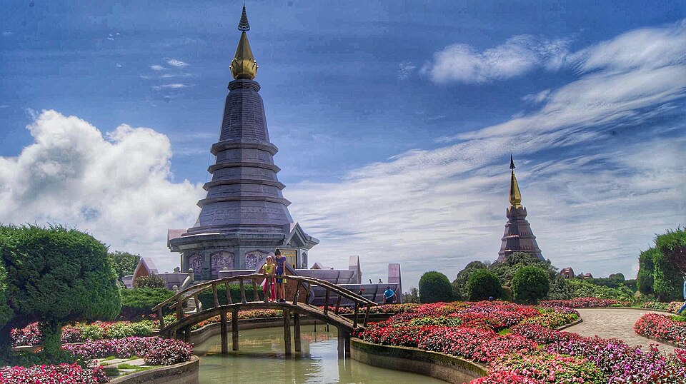
泰國最高峰，海拔2565公尺，山頂雙塔（國王塔＋皇后塔）俯瞰雲海，沿途瀑布與步道景觀豐富，12月底剛好是最涼爽、最容易看到雲海的季節。
👀 必看：山頂雙塔庭園、Wachirathan 瀑布、Ang Ka Luang 高山步道
被森林包圍的山村，木屋沿溪而建，以自種咖啡聞名，步調非常慢，適合想避開景點人潮、單純放空一天的玩法。
👀 必看：溪邊木屋聚落、山村自家烘焙咖啡
唯一一趟國內飛機，建議中午前後班機，下午抵達曼谷還有半天可以逛。
曼谷最密集的商場帶，三棟走路都到得了。雖然已經過了12/25，但商場大型聖誕佈置通常不會立刻拆掉，還吃得到最後一口「聖誕餘溫」——巨型聖誕樹、燈飾隧道依然在。
👀 必看：CentralWorld 廣場前的巨型聖誕燈飾、Ratchaprasong 一帶夜間散步
🍴 必吃：找間泰式餐廳吃晚餐，Siam Paragon 地下樓美食街也很方便
這天會是整趟最「曼谷本體」的一天。
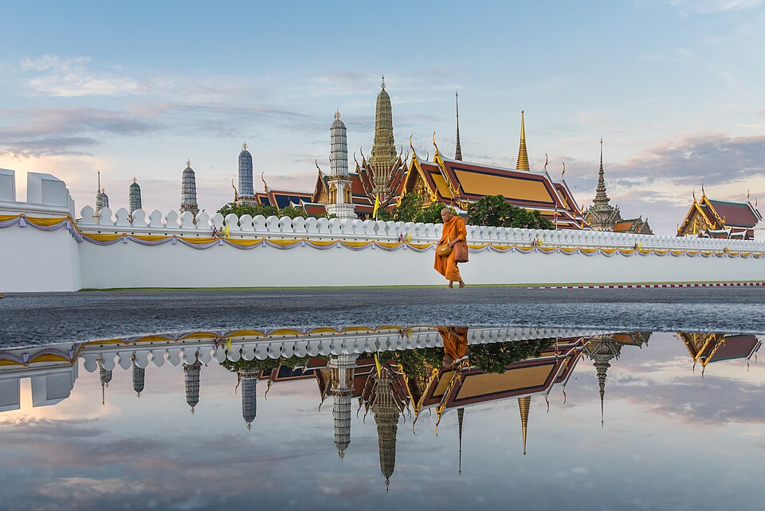
暹羅王朝的權力核心，金碧輝煌的尖頂屋簷是曼谷最經典的畫面。園區內的玉佛寺供奉泰國最神聖的翡翠佛像，是全泰國宗教與王室地位最高的地方。
👀 必看：玉佛寺翡翠佛像、金色尖塔屋頂群、皇室禮儀衛兵交接
⚠️ 提醒：需穿長袖長褲或有袖上衣＋長裙才能入內，入口通常有免費／租借罩衫服務
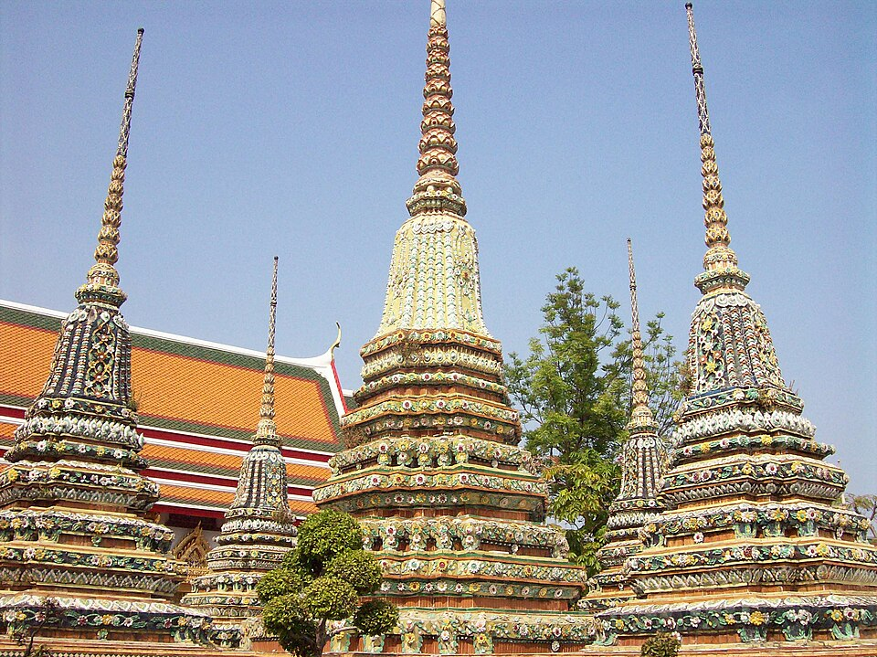
曼谷歷史最早的寺廟之一，寺內全長46公尺的臥佛貼滿金箔，腳底鑲嵌108幅珍珠母貝畫，也是泰式古式按摩的發源地。與大皇宮走路5分鐘互通，安排在同一段最順。
👀 必看：46公尺鎏金臥佛、108個化緣缽（投硬幣許願）
🍴 必吃：寺廟周邊路邊攤的泰式奶茶、Tha Tien 碼頭附近的海南雞飯老店
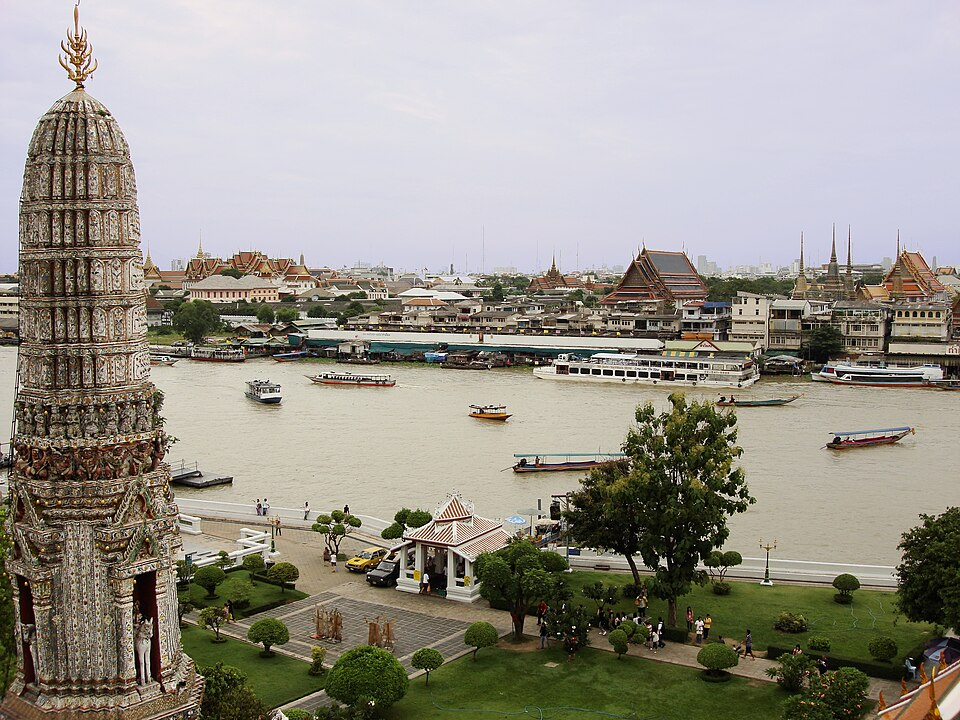
昭披耶河對岸的「黎明寺」，塔身鑲滿中國瓷片與貝殼，日落時分金光反射最美。附近的 Talat Noi 是曼谷最出片的老城巷弄之一——鏽蝕鐵皮與老華人商行招牌，近年因壁畫進駐變成攝影愛好者的秘密景點。
👀 必看：鄭王廟日落剪影、Talat Noi「變形金剛牆」壁畫
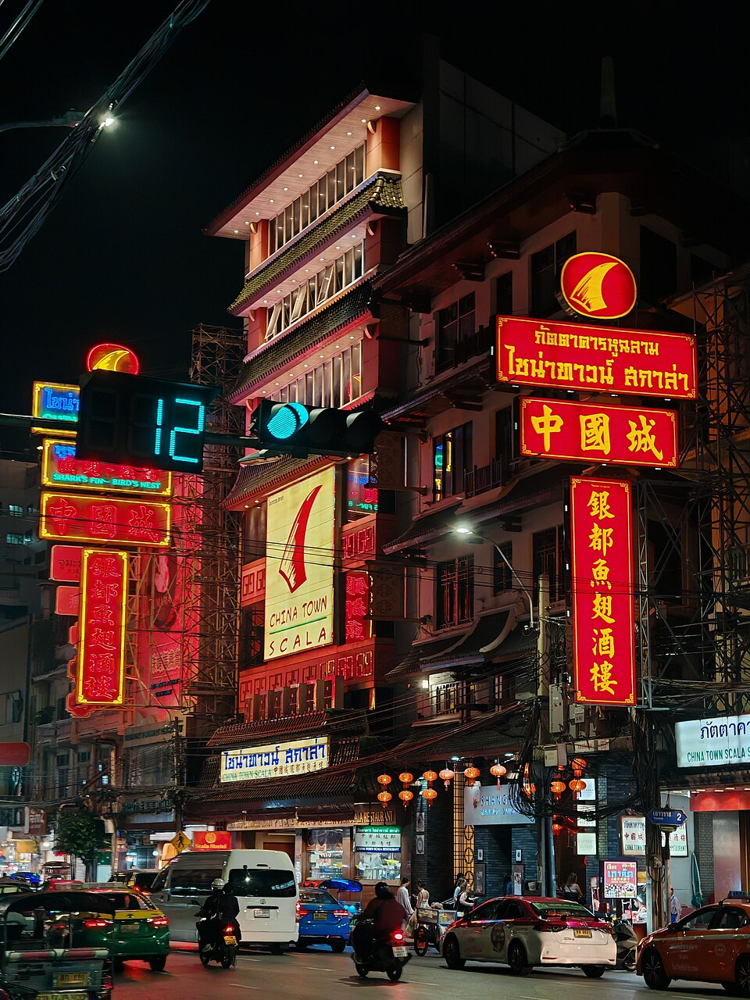
白天是老字號金飾店與南北貨批發街，入夜後兩旁路邊攤全部亮燈開張，是曼谷夜間覓食密度最高的一條街。
🍴 必吃：燕窩甜品、生猛海鮮熱炒（路邊攤現點現炒）、豬腳飯、榴槤雪糕
今晚要跨年，白天行程刻意放輕，傍晚早點開始往跨年場地移動。
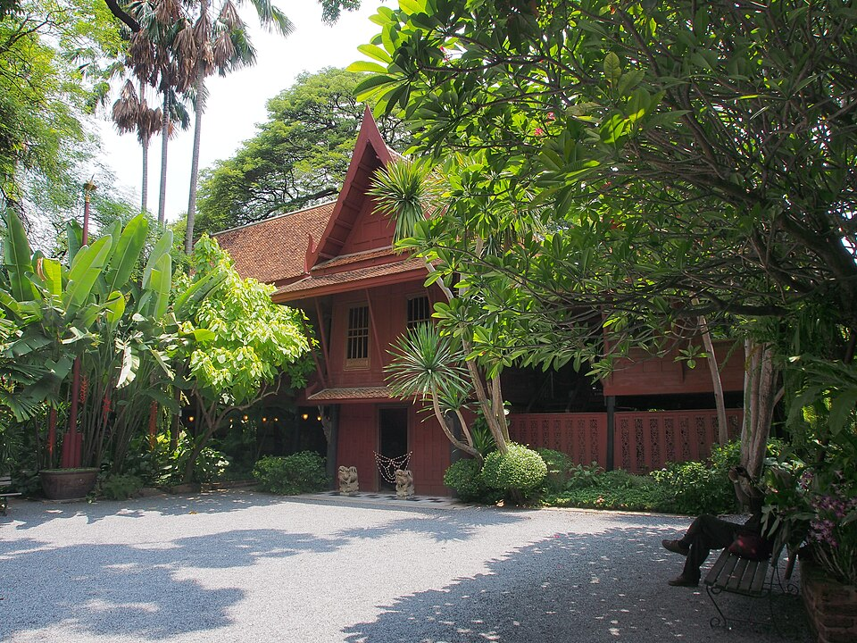
美國商人 Jim Thompson 在曼谷復興泰絲產業後，用六棟傳統柚木屋改建的私人宅邸，現為博物館，收藏東南亞古董藝術品，庭院緊鄰運河，是市中心難得的靜謐角落。
👀 必看：傳統柚木建築群、私人藝術收藏、熱帶庭園
選項A．ICONSIAM：昭披耶河岸煙火，視覺效果最好，第一次曼谷跨年推薦這個。
選項B．CentralWorld：人潮最多，演唱會型 Countdown，時代廣場感。
⚠️ 提醒：12/31 千萬不要臨近午夜才叫 Grab，提早規劃回程動線
Chatuchak 週末市集、MOCA 當代美術館、Ancient City 微縮古蹟公園、ICONSIAM、Siam Shopping、Ari 咖啡區——如果前幾天很累，就直接變 Shopping＋按摩日。
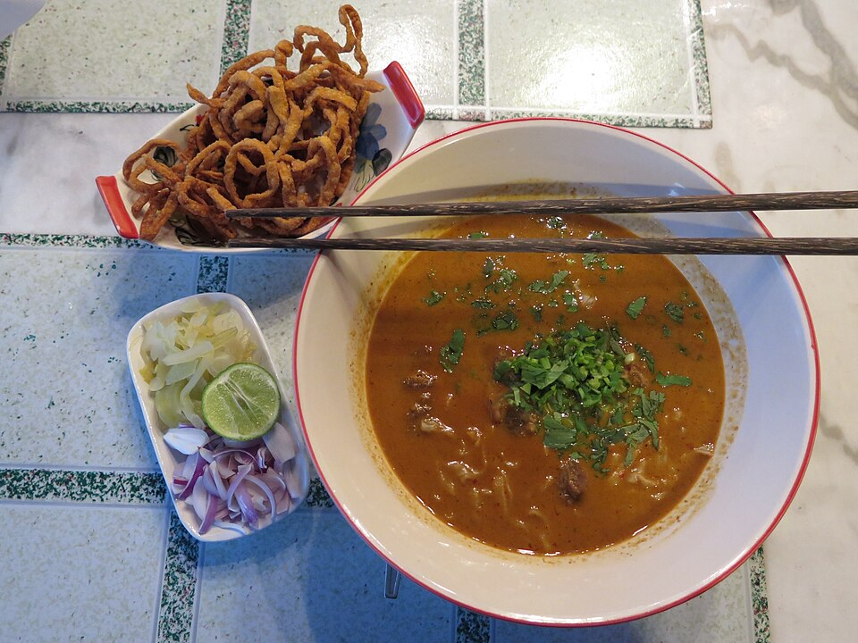
北泰代表性麵食，椰奶咖哩湯底配軟麵條，上面撒一把炸脆麵當口感對比，通常配生洋蔥、酸菜、萊姆調味——清邁必吃招牌，古城內外到處都有名店。
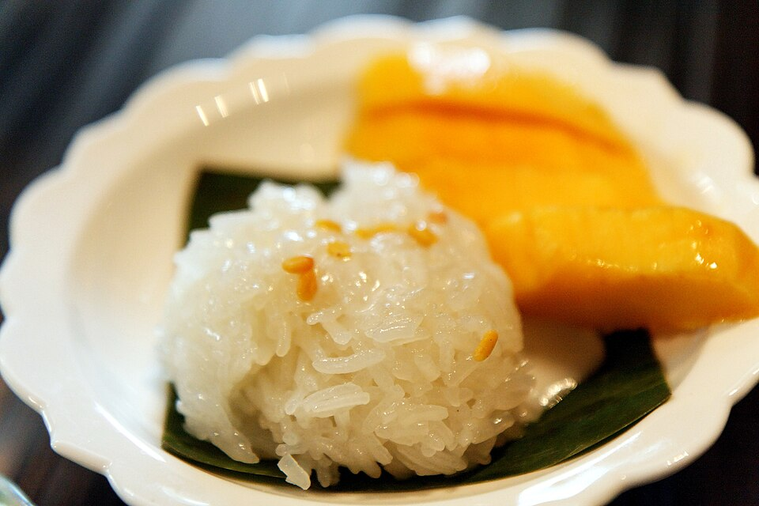
泰國國民甜點，糯米用椰漿蒸煮後配上新鮮芒果切片，再淋一勺鹹甜椰漿汁——街邊攤、夜市、五星飯店都能吃到，是整趟旅程從頭甜到尾的味道。
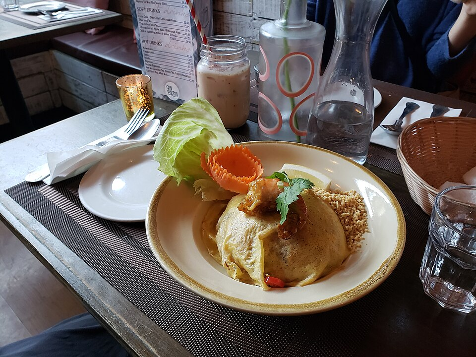
河粉、蝦仁、豆芽菜、韭菜用羅望子醬炒香，配花生碎與萊姆角，是最容易入門、也最能代表泰國街頭小吃的一道菜，曼谷、清邁到處都吃得到。
| 項目 | 預估 |
|---|---|
| 台北－曼谷來回 | NT$11,000～15,000 |
| 曼谷－清邁單程國內段 | NT$1,500～2,500 |
| 9晚住宿 | NT$8,000～12,000 |
| 餐飲 | NT$4,500～7,000 |
| Grab / MRT / BTS | NT$2,000～3,000 |
| 景點／Doi Inthanon | NT$2,000～4,000 |
| 總計 | 約 NT$31,000～46,000 |
💰 省著玩：約 NT$30,000～35,000 🛋️ 舒服玩：約 NT$38,000～42,000